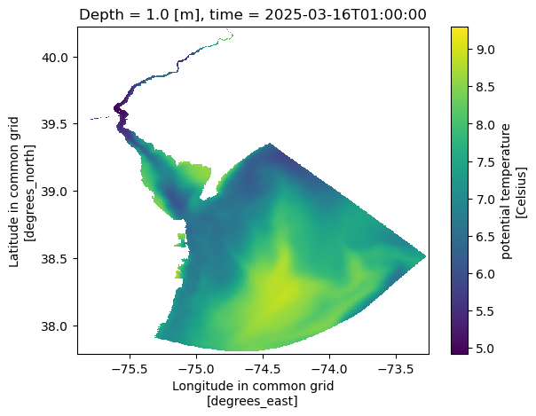
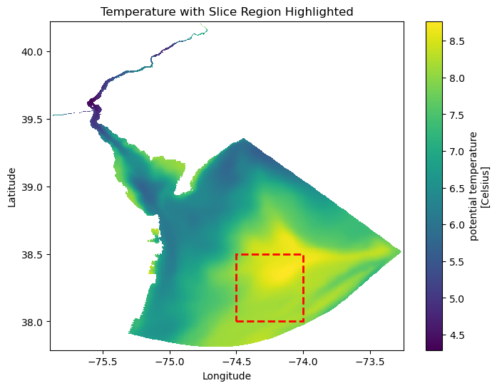
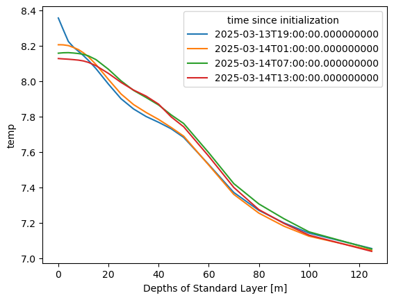
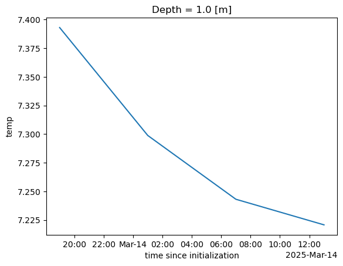

import xarray as xrDelaware Bay Operational Forecast System (DBOFS)
📘 Learning Objectives
- Get more practice making data cubes from netcdf on THREDDS servers using OPeNDAP
- Do some basic data aggregation and plotting
Overview
This example is very similar to the first tutorial using NCEP-NCAR Reanalysis 1, but the netcdfs are slightly different and you will get more practice. This tutorial uses an example where the server doesn’t require authentication (username and password).
Deleware Bay Forecast
We will create a data cube for data from the Delaware Bay Operational Forecast System (DBOFS). The approach is the same. We go to the THREDDS server for NOS and navigate through until we find the OPeNDAP page for a file. Then we need to get the url format for each file. Here is an example for one day. Note they only keep recent data so this url will break after March 2025.
https://opendap.co-ops.nos.noaa.gov/thredds/dodsC/NOAA/DBOFS/MODELS/2025/03/14/dbofs.t18z.20250314.regulargrid.n001.ncFirst step is to create some file urls. I am going to get the files for yesterday since they only keep the gridded data for couple days.
from datetime import datetime, timedelta, timezone
# Get yesterday's date in UTC
yesterday = datetime.now(timezone.utc) - timedelta(days=1)
year, month, day = yesterday.strftime('%Y'), yesterday.strftime('%m'), yesterday.strftime('%d')
# Base URL with placeholders
base = f'https://opendap.co-ops.nos.noaa.gov/thredds/dodsC/NOAA/DBOFS/MODELS/{year}/{month}/{day}/dbofs.t%2.2dz.{year}{month}{day}.regulargrid.n001.nc'
# Generate URLs for different hours
urls = [base % d for d in range(0, 24, 6)]
urls['https://opendap.co-ops.nos.noaa.gov/thredds/dodsC/NOAA/DBOFS/MODELS/2025/03/17/dbofs.t00z.20250317.regulargrid.n001.nc',
'https://opendap.co-ops.nos.noaa.gov/thredds/dodsC/NOAA/DBOFS/MODELS/2025/03/17/dbofs.t06z.20250317.regulargrid.n001.nc',
'https://opendap.co-ops.nos.noaa.gov/thredds/dodsC/NOAA/DBOFS/MODELS/2025/03/17/dbofs.t12z.20250317.regulargrid.n001.nc',
'https://opendap.co-ops.nos.noaa.gov/thredds/dodsC/NOAA/DBOFS/MODELS/2025/03/17/dbofs.t18z.20250317.regulargrid.n001.nc']Then we can open these as usual with xarray.
%%time
ds = xr.open_mfdataset(urls, parallel=True)
dsCPU times: user 1.48 s, sys: 358 ms, total: 1.84 s
Wall time: 5.97 s<xarray.Dataset> Size: 392MB
Dimensions: (time: 4, ny: 487, nx: 529, Depth: 22)
Coordinates:
* Depth (Depth) float64 176B 0.0 1.0 2.0 4.0 ... 80.0 90.0 100.0 125.0
Latitude (ny, nx) float64 2MB dask.array<chunksize=(487, 529), meta=np.ndarray>
Longitude (ny, nx) float64 2MB dask.array<chunksize=(487, 529), meta=np.ndarray>
* time (time) datetime64[ns] 32B 2025-03-16T19:00:00 ... 2025-03-17...
Dimensions without coordinates: ny, nx
Data variables:
h (time, ny, nx) float64 8MB dask.array<chunksize=(1, 487, 529), meta=np.ndarray>
mask (time, ny, nx) float64 8MB dask.array<chunksize=(1, 487, 529), meta=np.ndarray>
zeta (time, ny, nx) float32 4MB dask.array<chunksize=(1, 487, 529), meta=np.ndarray>
zetatomllw (time, ny, nx) float32 4MB dask.array<chunksize=(1, 487, 529), meta=np.ndarray>
u_eastward (time, Depth, ny, nx) float32 91MB dask.array<chunksize=(1, 22, 487, 529), meta=np.ndarray>
v_northward (time, Depth, ny, nx) float32 91MB dask.array<chunksize=(1, 22, 487, 529), meta=np.ndarray>
temp (time, Depth, ny, nx) float32 91MB dask.array<chunksize=(1, 22, 487, 529), meta=np.ndarray>
salt (time, Depth, ny, nx) float32 91MB dask.array<chunksize=(1, 22, 487, 529), meta=np.ndarray>
Attributes: (12/36)
file: dbofs.t00z.20250317.fields.nowcast_0002.nc
format: netCDF-4/HDF5 file
Conventions: CF-1.4, SGRID-0.3
type: ROMS/TOMS history file
title: dbofs nowcast RUN in operational mode
var_info: varinfo.yaml
... ...
compiler_flags: -fp-model precise -ip -O3
tiling: 008x016
history: ROMS/TOMS, Version 4.2, Monday - March 1...
ana_file: ROMS/Functionals/ana_btflux.h, ROMS/Func...
CPP_options: mode, ADD_FSOBC, ADD_M2OBC, ANA_BSFLUX, ...
DODS_EXTRA.Unlimited_Dimension: time# each file is about 100Mb
print(f"{ds.isel(time=1).nbytes / 1e6} Mb")100.9884 MbNext we can plot a map of the temperature at one time point.
ds.temp.isel(Depth=1, time=1).plot(x='Longitude', y='Latitude');
And we can get the mean temperature for the 4 time points.
%%time
ds_mean = ds["temp"].isel(Depth=1).mean(dim=['ny', 'nx'])
ds_mean.plot();CPU times: user 58.2 ms, sys: 3.28 ms, total: 61.5 ms
Wall time: 1.19 sA plot of temperature by depth
Here I will make a plot of temperature by depth in the middle of the bay.
import matplotlib.pyplot as plt
import matplotlib.patches as patches
# Plot the full dataset
fig, ax = plt.subplots(figsize=(8, 6))
ds2.temp.isel(Depth=1, time=1).plot(x="Longitude", y="Latitude", ax=ax)
# Define the slice box coordinates
lon_min, lon_max = -74.5, -74
lat_min, lat_max = 38, 38.5
# Create a rectangular patch (bounding box)
box = patches.Rectangle(
(lon_min, lat_min), # Bottom-left corner (lon, lat)
lon_max - lon_min, # Width (longitude range)
lat_max - lat_min, # Height (latitude range)
linewidth=2, edgecolor='red', facecolor='none', linestyle="--"
)
# Add the box to the plot
ax.add_patch(box)
# Customize the plot
ax.set_title("Temperature with Slice Region Highlighted")
ax.set_xlabel("Longitude")
ax.set_ylabel("Latitude")
plt.show()
First, I am going to fix the indices to use lat/lon.
# because I want to slice with actual lat lon
lat_values = ds.isel(time=1, Depth=1, nx=1).Latitude.values
lon_values = ds.isel(time=1, Depth=1, ny=1).Longitude.values
ds = ds.assign_coords({"ny": lat_values, "nx": lon_values})
ds = ds.rename({"ny": "lat", "nx": "lon"})Create a mean by depth for each time period.
depth_slice = ds["temp"].sel(lon=slice(-74.5,-74), lat=slice(38, 38.5))depth_slice.mean(dim=['lat', 'lon']).plot.line(x="Depth");
Data on AWS
The data are also available on AWS in a S3 bucket. Let’s compare data access to that. https://noaa-nos-ofs-pds.s3.amazonaws.com/index.html The data are here but you need to know how to make s3 urls.
https://noaa-nos-ofs-pds.s3.amazonaws.com/dbofs/netcdf/2025/03/14/dbofs.t00z.20250314.regulargrid.n001.ncbecomes this
s3://noaa-nos-ofs-pds/dbofs/netcdf/2025/03/14/dbofs.t00z.20250314.regulargrid.n001.ncTo open netcdf on s3, we need to create a “fileset”; we cannot just us the list of urls like we can for the OPeNDAP links.
# create the file urls to s3 bucket by processing our original files list
s3_urls = [
url.replace(
"https://opendap.co-ops.nos.noaa.gov/thredds/dodsC/NOAA/DBOFS/MODELS",
"s3://noaa-nos-ofs-pds/dbofs/netcdf"
) for url in urls
]
s3_urls['s3://noaa-nos-ofs-pds/dbofs/netcdf/2025/03/16/dbofs.t00z.20250316.regulargrid.n001.nc',
's3://noaa-nos-ofs-pds/dbofs/netcdf/2025/03/16/dbofs.t06z.20250316.regulargrid.n001.nc',
's3://noaa-nos-ofs-pds/dbofs/netcdf/2025/03/16/dbofs.t12z.20250316.regulargrid.n001.nc',
's3://noaa-nos-ofs-pds/dbofs/netcdf/2025/03/16/dbofs.t18z.20250316.regulargrid.n001.nc']# Run this code once to set up s3 access
import s3fs
fs = s3fs.S3FileSystem(anon=True)
# Create a fileset
fileset = [fs.open(url) for url in s3_urls]# each file is about 100Mb
fs.size(s3_urls[1])/1e6 # MB#101.415959We open up the fileset.
%%time
ds2 = xr.open_mfdataset(fileset)CPU times: user 2.18 s, sys: 1.2 s, total: 3.38 s
Wall time: 20.5 sWe now have a data cube that we can work with same as with our data cube from the OPeNDAP server. The data are only loaded when we need them (to plot or compute). Data access is considerably slower than for the OPeNDAP server. I don’t know why that is.
%%time
ds2_mean = ds2["temp"].isel(Depth=1).mean(dim=['ny', 'nx'])
ds2_mean.plot();CPU times: user 1.89 s, sys: 877 ms, total: 2.77 s
Wall time: 22.7 s
Conclusion
We worked through another example of getting data off an OPeNDAP server and compared to getting the data off an S3 bucket.
References
- Open files in S3 bucket https://nbviewer.org/gist/rsignell-usgs/111222351c4fee9e99827844351ab952
- https://www.jamstec.go.jp/ridinfo/xarray-and-opendap/
- More opendap + xarray debugging https://github.com/stuckyb/gcdl/issues/24
- Another opendap example https://github.com/ornldaac/daymet-python-opendap-xarray/blob/master/1_daymetv4_discovery_access_subsetting.ipynb
- Nice example https://rabernat.github.io/research_computing_2018/xarray-tips-and-tricks.html
ds.to_zarr("metadata.zarr", consolidated=True, compute=False)Delayed('_finalize_store-304e974e-7cd0-41d4-b610-fe79bd608544')ds_lazy = xr.open_zarr("metadata.zarr", consolidated=True)ds_lazy.temp.isel(Depth=1, time=1).plot(x='Longitude', y='Latitude');--------------------------------------------------------------------------- ValueError Traceback (most recent call last) Cell In[18], line 1 ----> 1 ds_lazy.temp.isel(Depth=1, time=1).plot(x='Longitude', y='Latitude'); File /srv/conda/envs/notebook/lib/python3.12/site-packages/xarray/plot/accessor.py:48, in DataArrayPlotAccessor.__call__(self, **kwargs) 46 @functools.wraps(dataarray_plot.plot, assigned=("__doc__", "__annotations__")) 47 def __call__(self, **kwargs) -> Any: ---> 48 return dataarray_plot.plot(self._da, **kwargs) File /srv/conda/envs/notebook/lib/python3.12/site-packages/xarray/plot/dataarray_plot.py:310, in plot(darray, row, col, col_wrap, ax, hue, subplot_kws, **kwargs) 306 plotfunc = hist 308 kwargs["ax"] = ax --> 310 return plotfunc(darray, **kwargs) File /srv/conda/envs/notebook/lib/python3.12/site-packages/xarray/plot/dataarray_plot.py:1607, in _plot2d.<locals>.newplotfunc(***failed resolving arguments***) 1603 raise ValueError("plt.imshow's `aspect` kwarg is not available in xarray") 1605 ax = get_axis(figsize, size, aspect, ax, **subplot_kws) -> 1607 primitive = plotfunc( 1608 xplt, 1609 yplt, 1610 zval, 1611 ax=ax, 1612 cmap=cmap_params["cmap"], 1613 vmin=cmap_params["vmin"], 1614 vmax=cmap_params["vmax"], 1615 norm=cmap_params["norm"], 1616 **kwargs, 1617 ) 1619 # Label the plot with metadata 1620 if add_labels: File /srv/conda/envs/notebook/lib/python3.12/site-packages/xarray/plot/dataarray_plot.py:2316, in pcolormesh(x, y, z, ax, xscale, yscale, infer_intervals, **kwargs) 2313 y = _infer_interval_breaks(y, axis=0, scale=yscale) 2315 ax.grid(False) -> 2316 primitive = ax.pcolormesh(x, y, z, **kwargs) 2318 # by default, pcolormesh picks "round" values for bounds 2319 # this results in ugly looking plots with lots of surrounding whitespace 2320 if not hasattr(ax, "projection") and x.ndim == 1 and y.ndim == 1: 2321 # not a cartopy geoaxis File /srv/conda/envs/notebook/lib/python3.12/site-packages/matplotlib/__init__.py:1521, in _preprocess_data.<locals>.inner(ax, data, *args, **kwargs) 1518 @functools.wraps(func) 1519 def inner(ax, *args, data=None, **kwargs): 1520 if data is None: -> 1521 return func( 1522 ax, 1523 *map(cbook.sanitize_sequence, args), 1524 **{k: cbook.sanitize_sequence(v) for k, v in kwargs.items()}) 1526 bound = new_sig.bind(ax, *args, **kwargs) 1527 auto_label = (bound.arguments.get(label_namer) 1528 or bound.kwargs.get(label_namer)) File /srv/conda/envs/notebook/lib/python3.12/site-packages/matplotlib/axes/_axes.py:6522, in Axes.pcolormesh(self, alpha, norm, cmap, vmin, vmax, colorizer, shading, antialiased, *args, **kwargs) 6519 shading = shading.lower() 6520 kwargs.setdefault('edgecolors', 'none') -> 6522 X, Y, C, shading = self._pcolorargs('pcolormesh', *args, 6523 shading=shading, kwargs=kwargs) 6524 coords = np.stack([X, Y], axis=-1) 6526 kwargs.setdefault('snap', mpl.rcParams['pcolormesh.snap']) File /srv/conda/envs/notebook/lib/python3.12/site-packages/matplotlib/axes/_axes.py:6026, in Axes._pcolorargs(self, funcname, shading, *args, **kwargs) 6024 if funcname == 'pcolormesh': 6025 if np.ma.is_masked(X) or np.ma.is_masked(Y): -> 6026 raise ValueError( 6027 'x and y arguments to pcolormesh cannot have ' 6028 'non-finite values or be of type ' 6029 'numpy.ma.MaskedArray with masked values') 6030 nrows, ncols = C.shape[:2] 6031 else: ValueError: x and y arguments to pcolormesh cannot have non-finite values or be of type numpy.ma.MaskedArray with masked values

ds.to_netcdf("metadata.nc", compute=False)HDF5-DIAG: Error detected in HDF5 (1.14.3) thread 1:
#000: H5F.c line 660 in H5Fcreate(): unable to synchronously create file
major: File accessibility
minor: Unable to create file
#001: H5F.c line 614 in H5F__create_api_common(): unable to create file
major: File accessibility
minor: Unable to open file
#002: H5VLcallback.c line 3605 in H5VL_file_create(): file create failed
major: Virtual Object Layer
minor: Unable to create file
#003: H5VLcallback.c line 3571 in H5VL__file_create(): file create failed
major: Virtual Object Layer
minor: Unable to create file
#004: H5VLnative_file.c line 94 in H5VL__native_file_create(): unable to create file
major: File accessibility
minor: Unable to open file
#005: H5Fint.c line 1870 in H5F_open(): unable to truncate a file which is already open
major: File accessibility
minor: Unable to open file--------------------------------------------------------------------------- KeyError Traceback (most recent call last) File /srv/conda/envs/notebook/lib/python3.12/site-packages/xarray/backends/file_manager.py:211, in CachingFileManager._acquire_with_cache_info(self, needs_lock) 210 try: --> 211 file = self._cache[self._key] 212 except KeyError: File /srv/conda/envs/notebook/lib/python3.12/site-packages/xarray/backends/lru_cache.py:56, in LRUCache.__getitem__(self, key) 55 with self._lock: ---> 56 value = self._cache[key] 57 self._cache.move_to_end(key) KeyError: [<class 'netCDF4._netCDF4.Dataset'>, ('/home/jovyan/nmfshackdays-2025/topics-2025/2025-opendap/metadata.nc',), 'a', (('clobber', True), ('diskless', False), ('format', 'NETCDF4'), ('persist', False)), '5982d31b-d457-4ea0-a129-4860759a8ef3'] During handling of the above exception, another exception occurred: PermissionError Traceback (most recent call last) Cell In[16], line 1 ----> 1 ds.to_netcdf("metadata.nc", compute=False) File /srv/conda/envs/notebook/lib/python3.12/site-packages/xarray/core/dataset.py:2380, in Dataset.to_netcdf(self, path, mode, format, group, engine, encoding, unlimited_dims, compute, invalid_netcdf, auto_complex) 2377 encoding = {} 2378 from xarray.backends.api import to_netcdf -> 2380 return to_netcdf( # type: ignore[return-value] # mypy cannot resolve the overloads:( 2381 self, 2382 path, 2383 mode=mode, 2384 format=format, 2385 group=group, 2386 engine=engine, 2387 encoding=encoding, 2388 unlimited_dims=unlimited_dims, 2389 compute=compute, 2390 multifile=False, 2391 invalid_netcdf=invalid_netcdf, 2392 auto_complex=auto_complex, 2393 ) File /srv/conda/envs/notebook/lib/python3.12/site-packages/xarray/backends/api.py:1911, in to_netcdf(dataset, path_or_file, mode, format, group, engine, encoding, unlimited_dims, compute, multifile, invalid_netcdf, auto_complex) 1908 if auto_complex is not None: 1909 kwargs["auto_complex"] = auto_complex -> 1911 store = store_open(target, mode, format, group, **kwargs) 1913 if unlimited_dims is None: 1914 unlimited_dims = dataset.encoding.get("unlimited_dims", None) File /srv/conda/envs/notebook/lib/python3.12/site-packages/xarray/backends/netCDF4_.py:452, in NetCDF4DataStore.open(cls, filename, mode, format, group, clobber, diskless, persist, auto_complex, lock, lock_maker, autoclose) 448 kwargs["auto_complex"] = auto_complex 449 manager = CachingFileManager( 450 netCDF4.Dataset, filename, mode=mode, kwargs=kwargs 451 ) --> 452 return cls(manager, group=group, mode=mode, lock=lock, autoclose=autoclose) File /srv/conda/envs/notebook/lib/python3.12/site-packages/xarray/backends/netCDF4_.py:393, in NetCDF4DataStore.__init__(self, manager, group, mode, lock, autoclose) 391 self._group = group 392 self._mode = mode --> 393 self.format = self.ds.data_model 394 self._filename = self.ds.filepath() 395 self.is_remote = is_remote_uri(self._filename) File /srv/conda/envs/notebook/lib/python3.12/site-packages/xarray/backends/netCDF4_.py:461, in NetCDF4DataStore.ds(self) 459 @property 460 def ds(self): --> 461 return self._acquire() File /srv/conda/envs/notebook/lib/python3.12/site-packages/xarray/backends/netCDF4_.py:455, in NetCDF4DataStore._acquire(self, needs_lock) 454 def _acquire(self, needs_lock=True): --> 455 with self._manager.acquire_context(needs_lock) as root: 456 ds = _nc4_require_group(root, self._group, self._mode) 457 return ds File /srv/conda/envs/notebook/lib/python3.12/contextlib.py:137, in _GeneratorContextManager.__enter__(self) 135 del self.args, self.kwds, self.func 136 try: --> 137 return next(self.gen) 138 except StopIteration: 139 raise RuntimeError("generator didn't yield") from None File /srv/conda/envs/notebook/lib/python3.12/site-packages/xarray/backends/file_manager.py:199, in CachingFileManager.acquire_context(self, needs_lock) 196 @contextlib.contextmanager 197 def acquire_context(self, needs_lock=True): 198 """Context manager for acquiring a file.""" --> 199 file, cached = self._acquire_with_cache_info(needs_lock) 200 try: 201 yield file File /srv/conda/envs/notebook/lib/python3.12/site-packages/xarray/backends/file_manager.py:217, in CachingFileManager._acquire_with_cache_info(self, needs_lock) 215 kwargs = kwargs.copy() 216 kwargs["mode"] = self._mode --> 217 file = self._opener(*self._args, **kwargs) 218 if self._mode == "w": 219 # ensure file doesn't get overridden when opened again 220 self._mode = "a" File src/netCDF4/_netCDF4.pyx:2521, in netCDF4._netCDF4.Dataset.__init__() File src/netCDF4/_netCDF4.pyx:2158, in netCDF4._netCDF4._ensure_nc_success() PermissionError: [Errno 13] Permission denied: '/home/jovyan/nmfshackdays-2025/topics-2025/2025-opendap/metadata.nc'
ds_lazy = xr.open_dataset("metadata.nc")